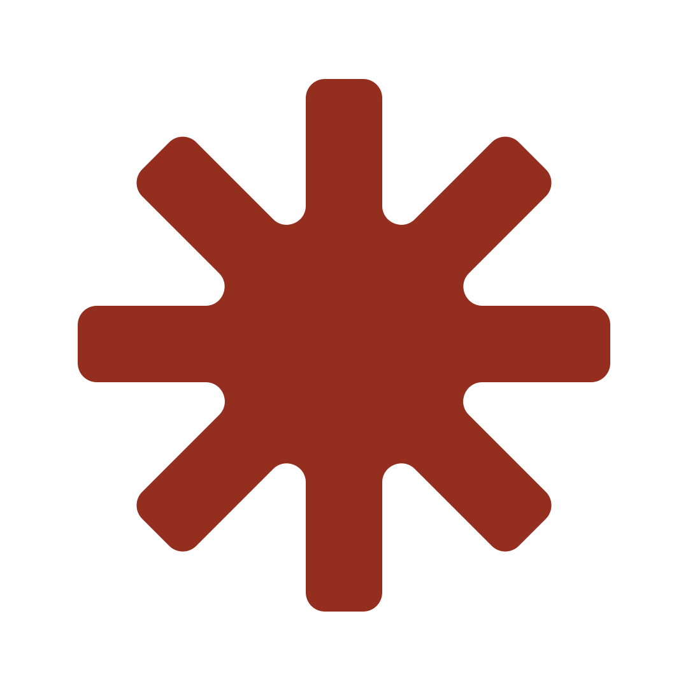
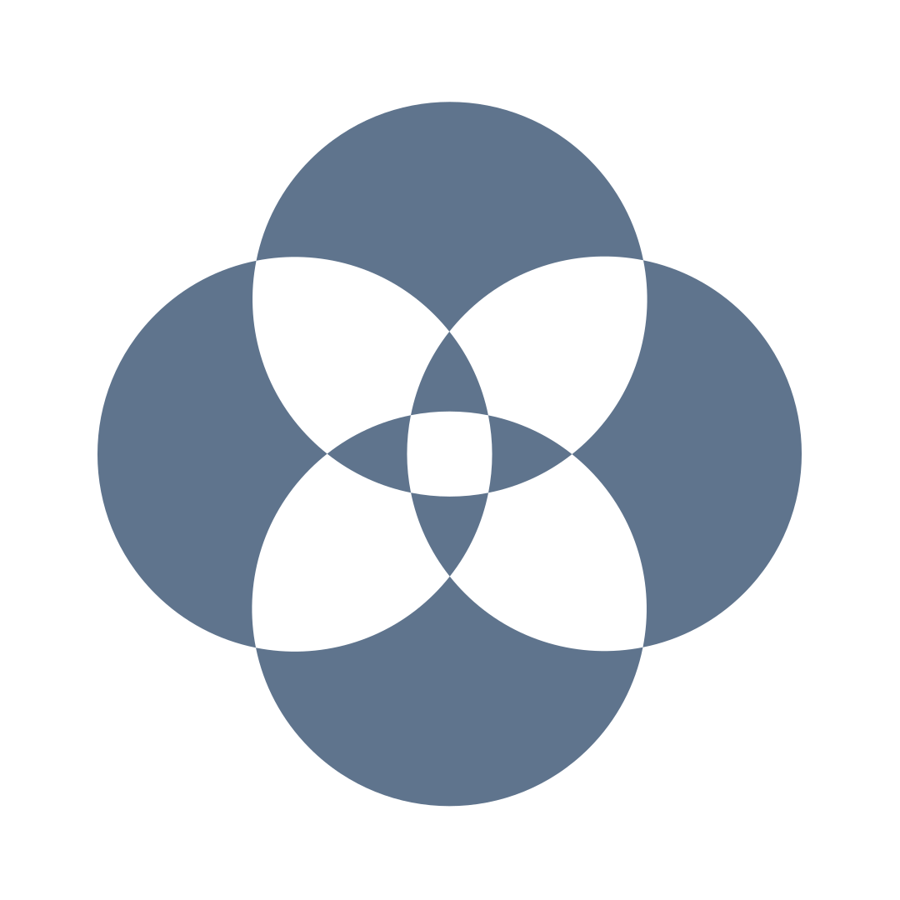
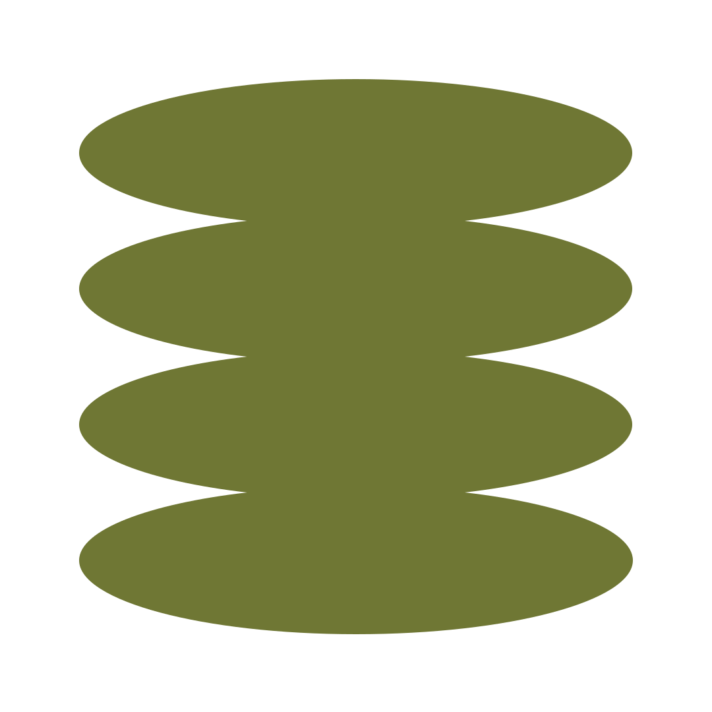
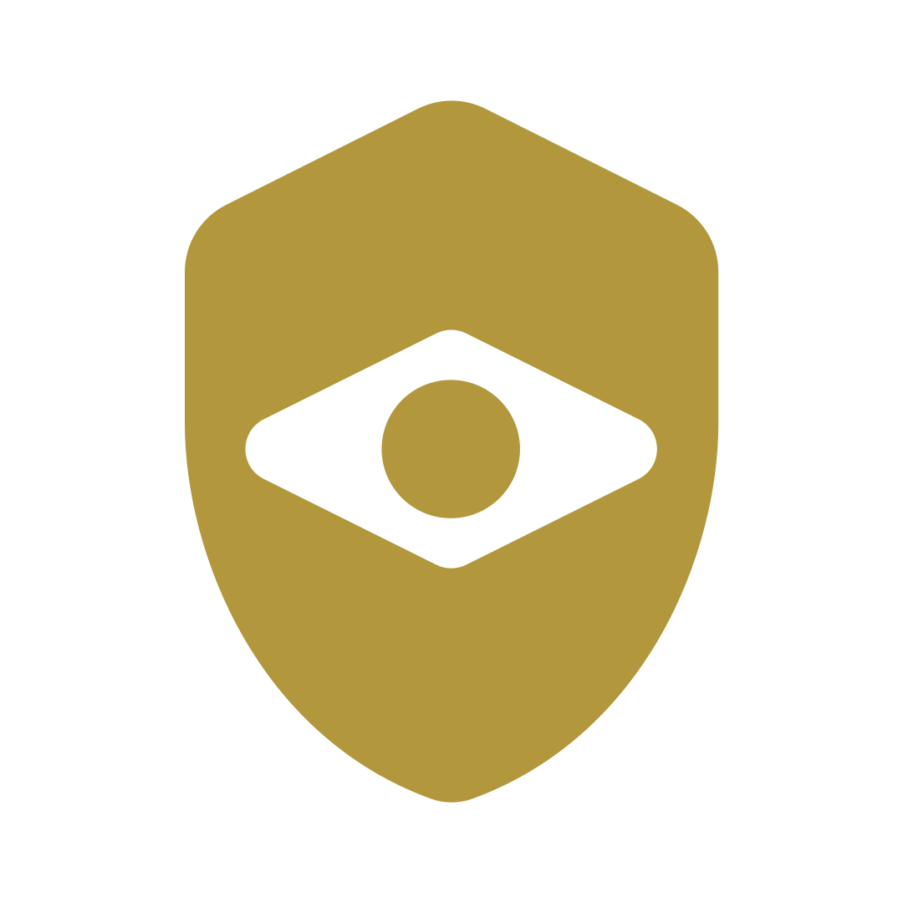
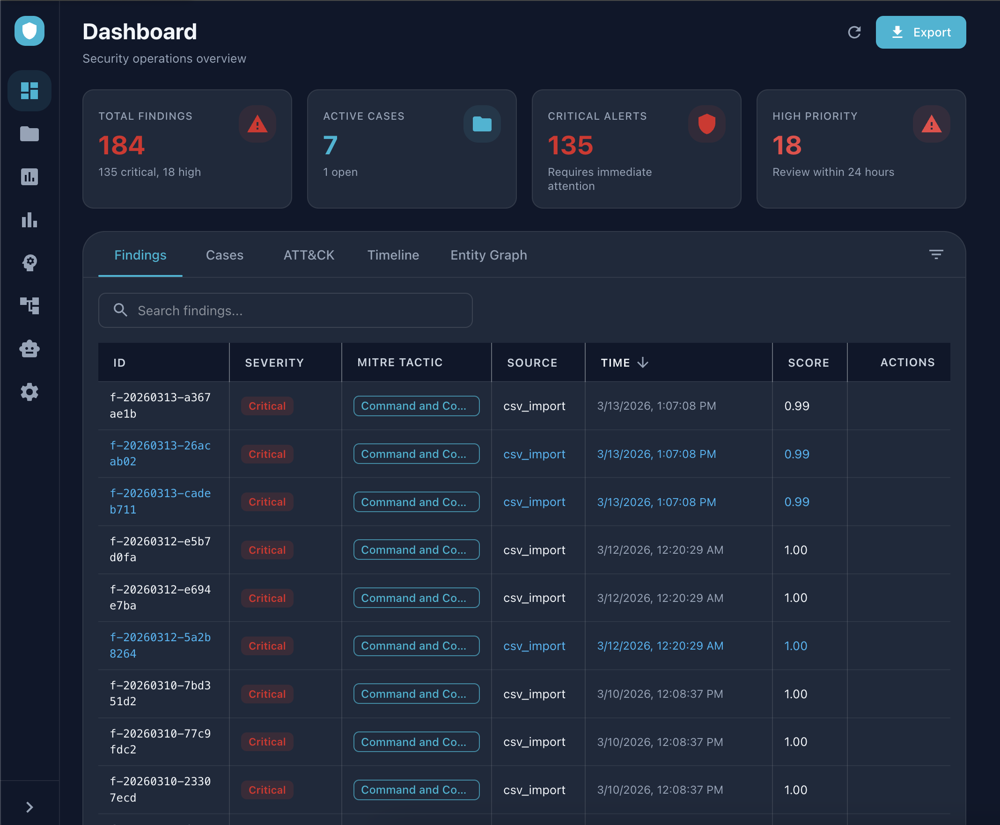

Vigil SOC brings together security engineers, researchers, and builders to develop and operate next-generation security systems in the open, through collaborative events, shared infrastructure, and real-world exercises.




Vigil ships with an Auto-Response agent that correlates signals across your stack, scores its own confidence, and contains the threat. Above your configured threshold (0.90 by default) it auto-approves; below, it routes to a human reviewer. Surgical actions (WAF block, Gateway block, session revoke) execute through a full audit trail. You set the boundary. Vigil keeps pace.
Vigil works the SOC lifecycle end-to-end, from raw signal to audit-ready report, with agents that share the same context, the same workflows, and the same open architecture.
7,200+ rules across Sigma, Splunk, Elastic, and KQL. The Triage agent scores every alert; coverage keeps compounding as the community ships new rules.
The Investigator, Correlator, Threat Intel, Forensics, Network Analyst, and Malware Analyst agents trace root cause across your full stack. Every step inspectable, every decision traceable.
Proactive, hypothesis-driven hunts mapped to MITRE ATT&CK. Workflows like Threat Hunt chain agents to probe assumptions, surface gaps, and pressure-test your defenses before adversaries do.
Apache 2.0, local-first, inspectable reasoning. Workflows are text files you can read, modify, and share. Every run leaves an audit trail, and the community's operational knowledge compounds.
13 specialized agents coordinated through Bifrost, the open LLM gateway, plus 30+ MCP integrations. The Responder routes by confidence threshold so humans stay in the loop where it counts.
Vigil is an open-source AI security operations platform. It puts a coordinated team of 13 specialized AI agents to work as your SOC, each with deep access to your security stack, each purpose-built for a specific part of the investigation lifecycle.
Built on Bifrost (an open LLM gateway) and the Model Context Protocol (MCP), Vigil is designed around a simple principle: AI agents should do the work, not just answer questions.
Say "Run incident response on finding XYZ" and agents execute in sequence: triage scores the alert, the investigator traces root cause, the responder submits containment actions, and the reporter generates audit-ready documentation. No hand-offs required.
Apache 2.0 licensed. Every agent's reasoning is inspectable. Every workflow is a text file you can read, modify, and share.

The cybersecurity market has a well-documented structural problem. Closed-source AI SOC platforms deepen it.
When agent reasoning is inspectable, detection quality becomes measurable. You know why an agent made a call, not just that it did.
Built on MCP, an open standard. When integrations are built on open standards, the ecosystem grows the platform. Every new MCP server is a free Vigil integration.
When workflows are text files, the community's collective operational knowledge compounds. Share a playbook and everyone's SOC gets smarter.
"Security operations shouldn't be a black box you buy. It should be a capability you build, together."
Three interlocking layers that give every agent real-time access to your entire stack.
A workflow is a multi-agent playbook that chains specialized agents into a complete, end-to-end run.
Each workflow maps to a real operational sequence and produces real outputs. Creating your own workflow is writing a
WORKFLOW.md file. If your team has a process, Vigil can run it.
End-to-end from alert to audit-ready documentation.
Deep-dive reconstruction with correlation across all connected data sources.
Proactive hypothesis-driven search using MITRE ATT&CK as the framework.
Evidence collection and analysis.
AWS/Azure/GCP incident response. IAM blast-radius, control-plane vs. data-plane analysis, provider-aware containment.
Vigil uses the Model Context Protocol to give every agent real-time access to your existing tools. 30+ integrations out of the box. If a tool has an MCP server, Vigil can connect to it.
Specialists with defined roles, tuned reasoning modes, and access to a deep backend tool surface plus 100+ extended tools via MCP. You set the automation thresholds. Vigil keeps humans in the loop where it counts, and gets out of the way everywhere else.
🔒 The Confidence Threshold: The Responder auto-approves containment actions at 0.90+ confidence. Below that, it routes to a human reviewer. You control the automation boundary. No surprises. No runaway automation.
Spanning Sigma, Splunk, Elastic, and KQL formats. AI-assisted coverage analysis, gap identification, and template generation. Every new community rule improves every deployment.
Build and update cases through natural language. Tell the system a finding is part of the lateral movement kill chain, and it handles the MITRE tagging, timeline updates, and case linkage automatically.
The Auto-Response agent runs continuously, ingesting findings, correlating across signals, and acting within your configured confidence threshold. The web UI remains your control plane for thresholds, escalations, and approvals. Start it with ./start_daemon.sh alongside the React + FastAPI frontend.
Your data never leaves your environment. No cloud dependency for core functionality. MCP connections are under your control. State persists in PostgreSQL with pgvector, running locally via Docker by default.
After starting Vigil, open the web UI and try the full incident response workflow live, using sample data included in the repo.
Use a real alert ID from your SIEM, or one of the included sample findings from the repo.
Type: Run incident response on finding f-20260215-a1b2c3d4
Triage → Investigate → Respond → Report. Every step visible, every decision inspectable.
Complete incident report with MITRE ATT&CK mapping, timeline, and recommended actions. Audit-ready.
Every serious AI SOC platform on the market is closed source. Here's the full picture.
(Including Dropzone AI, Conifers CognitiveSOC, Radiant Security, Prophet Security, Exaforce, Torq HyperSOC. None are open source. None use MCP.)
| ⚔️ Vigil (Open Source) | Commercial AI SOCs | |
|---|---|---|
| License | ✓ Apache 2.0, free forever | ✗ Proprietary, $36K–$200K+/yr |
| Source Code | ✓ Fully inspectable on GitHub | ✗ Closed / opaque |
| Agent Logic | ✓ Transparent, modifiable Python | ✗ Black box or patented |
| Integrations | ✓ MCP (open standard), 30+ | Proprietary APIs, 50–100+ |
| Extensibility | ✓ Write a WORKFLOW.md file | ✗ Vendor roadmap or pro services |
| Data Residency | ✓ 100% local, your machine | ✗ Cloud APIs, data leaves your env |
| Time to Try | ✓ git clone, < 3 minutes | ✗ Sales call, 30-day POC, procurement |
| Community | ✓ Open contributions welcome | Feature requests into a backlog |
| Detection Rules | ✓ 7,200+ included, community-maintained | Proprietary or third-party subscription |
| LLM Backend | ✓ Claude (default), extensible architecture | ✗ Vendor-locked to one provider |
Vigil is a platform, not a product. Here's what you can build, with no vendor permission required.
Workflows are markdown files defining multi-agent playbooks. Phishing triage, cloud incident response, insider threat: encode any process and share it with the community. No code required.
If your security tool has an API, wrap it in an MCP server and Vigil connects to it. SIEM, threat intel, firewalls, identity providers: all welcome.
Contribute rules in Sigma, Splunk SPL, Elastic KQL, or any format. Every new rule improves detection coverage for every Vigil deployment.
Each agent's behavior is readable Python. Better MITRE mapping, tighter forensic chain-of-custody formatting, sharper triage scoring: open a PR.
A searchable index of community workflows, by use case, alert type, and tool stack. Share a playbook, get one.
Run agents across multiple environments. Data stays local to each.
Version-controlled detection rules with automated testing and deployment.
Ollama and other local LLM providers as drop-in alternatives to the default Claude backend.
Currently DEV_MODE bypass. Production auth (SSO, scoped tokens, role-based access) is on deck.
Three commands. No sales call. No procurement. No 30-day POC.
http://localhost:6988
http://localhost:6987/docs
Vigil is sponsored by DeepTempo. DeepTempo's LogLM connects to Vigil via MCP as a high-fidelity behavioral detection layer, giving you AI-native detections on top of an open AI SOC. Vigil works with Splunk alone. Adding DeepTempo means AI-native behavioral detection on top of it.
Vigil is early. The architecture is solid, the agents are working, and the workflow system is production-tested.
What we need now is the community: people who run SOCs, build integrations, write detections,
and know what's broken in their security operations today.
The agents are transparent. The workflows are text files. The integrations are open standard.
Everything is designed for you to make it yours.